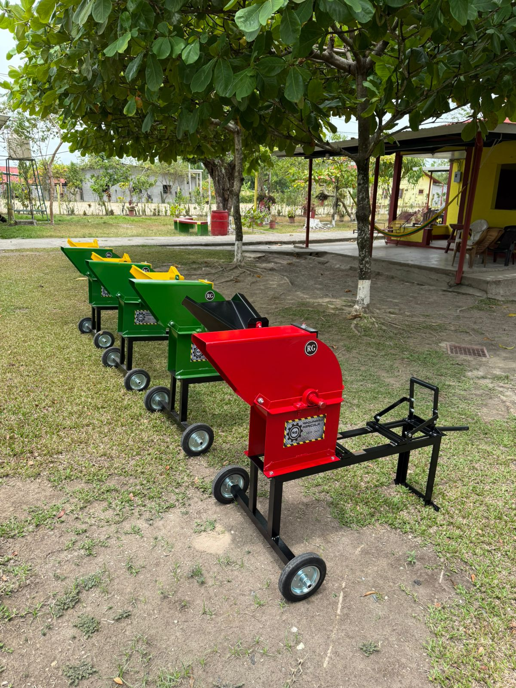
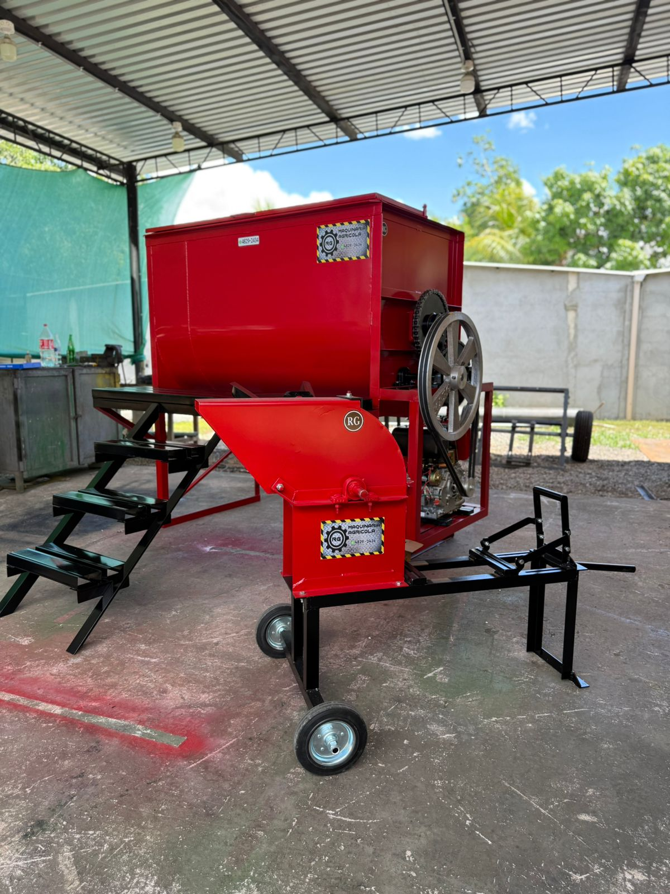
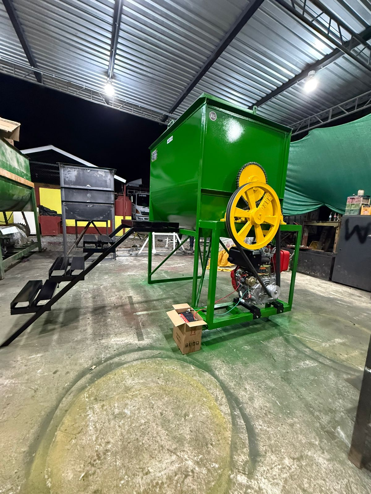
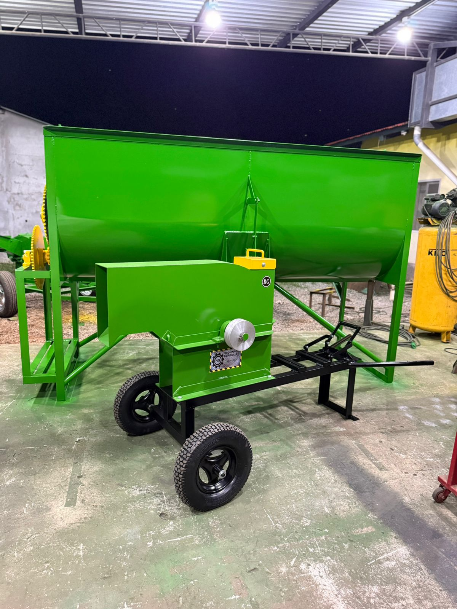
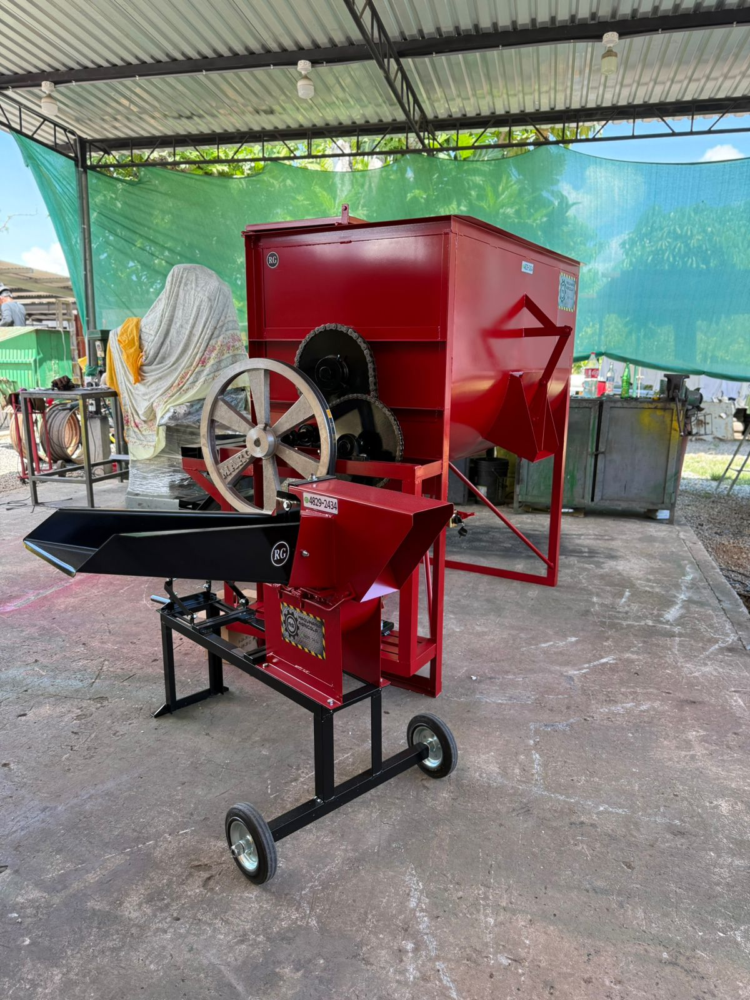
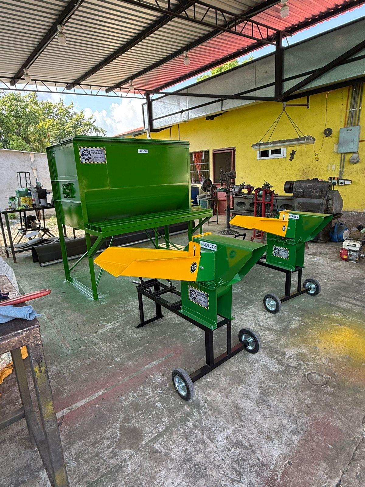
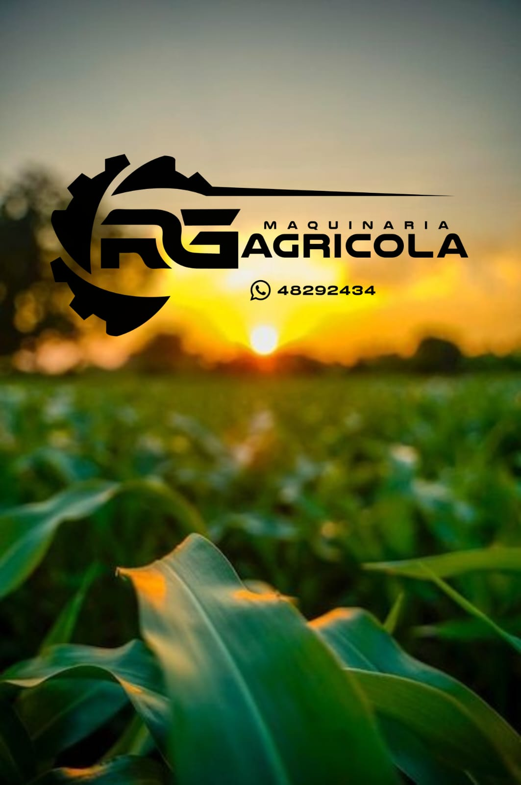

Fabricamos picadoras, molinos y mezcladoras diseñadas para resistir el trabajo rudo de la finca. Haga rendir su cosecha de milpa, optimice el zacate y multiplique el peso de su ganado.
Sabemos lo que cuesta producir en el campo. Por eso, nuestras máquinas no son de juguete; están hechas de hierro grueso, soldadura de alta penetración y motores probados.
Pique zacate, caña y milpa seca o verde a la medida perfecta. Reduzca el desperdicio en los comederos; lo que la vaca no se comía entero, ahora se lo comerá picado.
Al preparar sus propias mezclas y concentrados con nuestras mezcladoras, usted controla la nutrición de sus animales, logrando más litros de leche y mayor peso al destete.
Olvídese de las latas delgadas. Reforzamos las chumaceras, usamos cuchillas de acero templado y garantizamos repuestos para que su máquina trabaje de sol a sol.
Equipos listos para entrega. Elija la que mejor se adapte a su finca.

Equipos compactos pero potentes, con llantas para fácil traslado. Ideales para el corte diario de pastos, caña de azúcar y rastrojo para el ganado tabulado.

La solución completa para la lechería o el engorde. Pique el verde y mézclelo al instante con granos y melaza en una sola máquina. Gran capacidad por bache.

Independencia total. Este equipo incluye motor propio, ideal para galeras o corrales donde no hay acceso directo a toma de fuerza o electricidad trifásica.

Robusta boca de alimentación y chasis largo. Diseñada para largas jornadas de trabajo moliendo granos secos o picando forrajes voluminosos.

Con transmisión por cadena y poleas de gran tamaño. Una bestia para el trabajo pesado que requiere alta tracción y fuerza constante.

Somos fabricantes. Modificamos chasis, adaptamos motores eléctricos o de gasolina, y construimos según los requerimientos de su finca.
Vea el rendimiento y la fuerza de nuestras máquinas trabajando directamente en el campo. No le contamos, se lo demostramos.
Nuestro Video Más Visto
Excelente Rendimiento
Demostración de Fuerza
Conozca de primera mano la calidad del hierro y la soldadura que utilizamos. Estamos con las puertas abiertas para que elija la máquina perfecta para su finca.
Haga clic en el botón abajo para abrir la ruta directa en su celular y llegar sin perderse.
Abrir Ruta en Google MapsHaga clic aquí para navegar

Sabemos que el agricultor busca máquinas que no lo dejen tirado a media faena. Cientos de ganaderos ya confían en el hierro fuerte de Maquinaria Agrícola RG.
+502 4829-2434